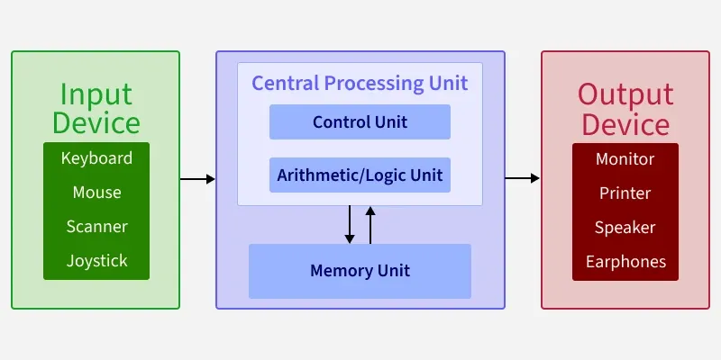
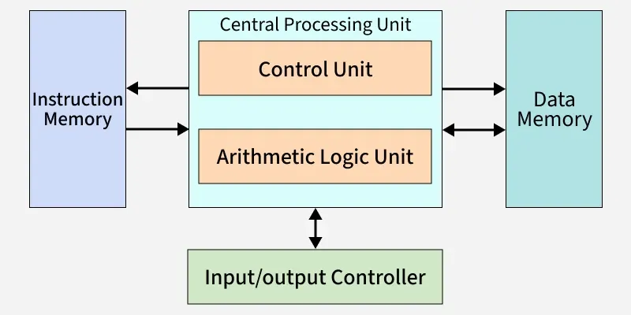
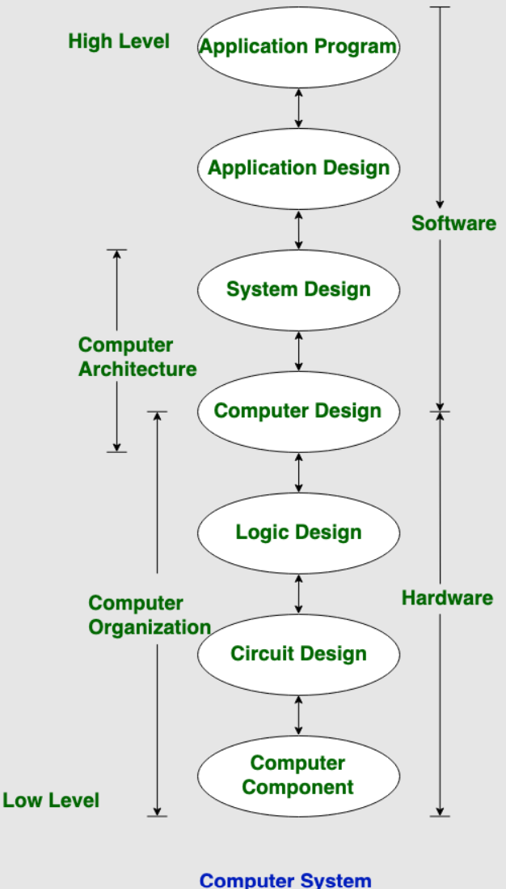
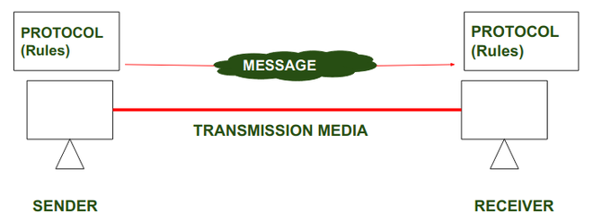
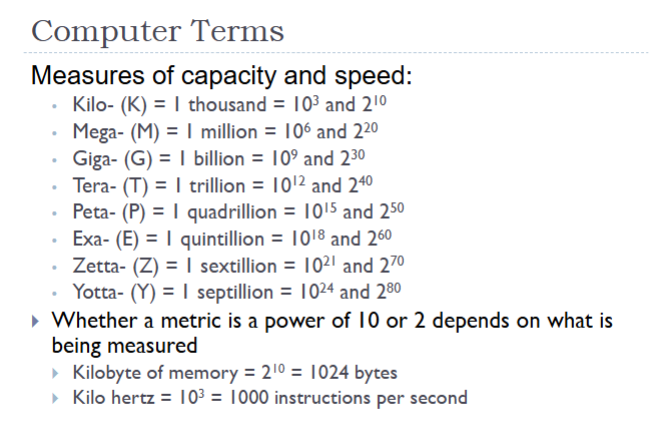
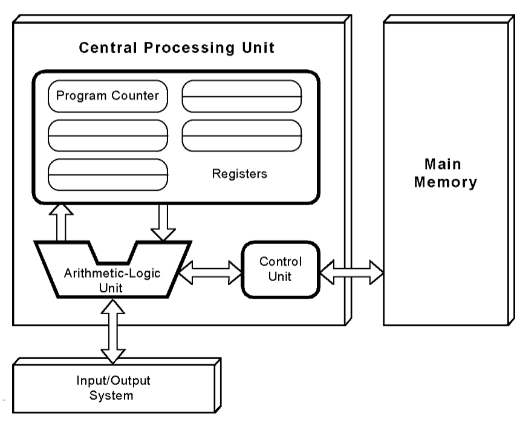
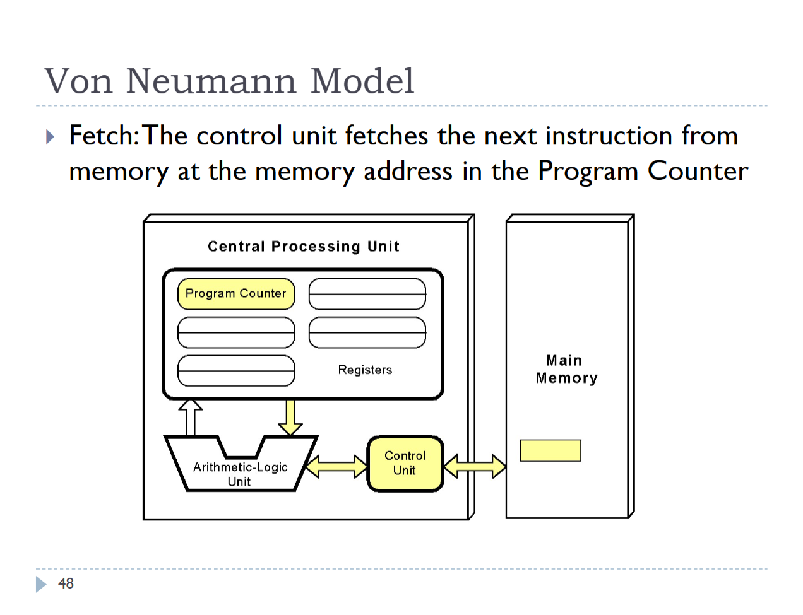
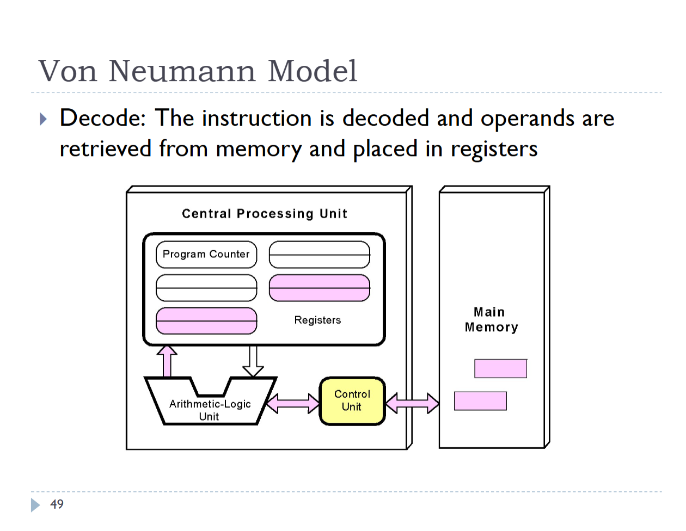
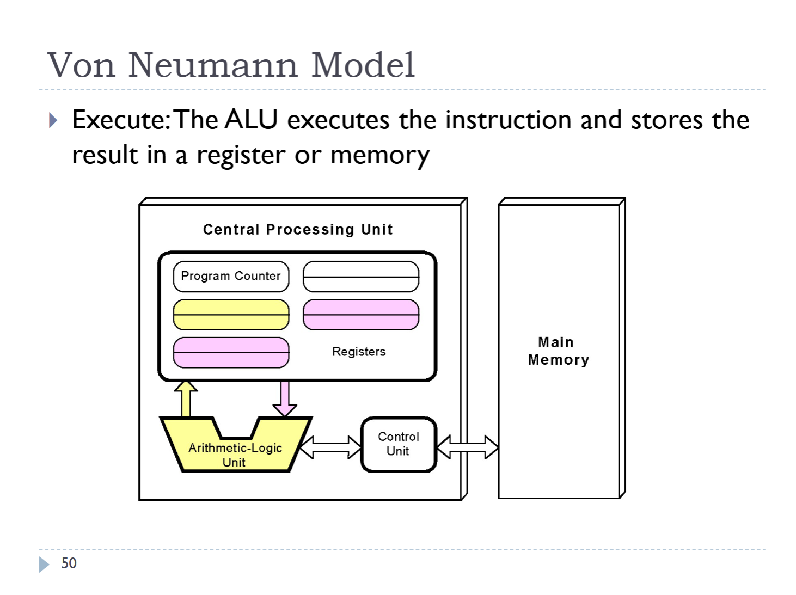

- CPU (Central Processing Unit)
- ALU
- Registers including a PC
- Control Units
- Main memory (RAM)
- Storage and I/O system (hard drive, display, keyboard)
Module 1
- Reading Notes
- Simple Understanding of a Computer ** has quiz
- Issues in Computer Design ** has quiz
- Computer System Level Hierarchy
- Difference between assembly language and high level language
- Von Neumann architecture ** has quiz
- Harvard architecture ** has quiz
- Differences between computer architecture and computer organization
- Standard organizations for data communications
- Units of information
- Clock speed
- Moore’s Law
- Moore's Second Law (aka Rock's Law)
- Class Notes
Reading Notes
1) Simple understanding of a computer
Software --> Instructions that tells the computer what to do.
Hardware --> Physical parts of the computer
Some Hardware:
| Component | Notes |
|---|---|
| Central Processing Unit (CPU) | The "brain" of the computer. Does the important stuff like listeningn to intructions,
executing them to perform calculations. Makes sure system runs efficiently. Takes input
data and extracts useful information out of it. Consists of...
|
| Motherboard | Main circuit board that is like the main big communication hub for all the computer components. |
| Memory (RAM) | Random Access Memory stores data temporarily for quick access while the computer is running. |
| Storage | Includes hard disk drives (HDD) and solid state drives (SSD) that stores data permanently. |
Computers based on size:
- Microcomputers → designed for individual use like smartphones and desktop computers
- Minicomputers → used by businesses and more powerful than micro. Now replaced by modern systems like servers.
- Mainframe computers → used by large organizations. Helps with processing bulk data.
- Supercomputers → extremely powerful usually used for research.
Computers based on functionality:
- Analog computers → stores data using continuous physical quantities
- Digital computers
- Hybrid computers → combination of both analogue and digital like complex medical equipment
2) Issues in Computer Design
Issues in Computer Design: Performance, security risks, software-hardware co-design, resource and technical constraints
3) Computer System Level Hierarchy
- Level 0: Digital Logic → circuits, gates
- Digital logic is the basis for digital computing and provides a fundamental understanding of how circuits and hardware communicate within a computer. Consists of various circuits and gates etc.
- Level 1: Control → Microcode
- Level 2: Machine → Instruction set architecture
- consists of machines, different types of hardware. Contains instruction set architecture
- Level 3: System Software → operating system
- Level 4: Assembly language → Assembly code
- Level 5: High level language → C++, Java
- Level 6: User → executable program
- Control is the level where microcode is used in the system
Different levels of hierarchy:
Hardware, firmware (software that is stored in non-volatile memory like BIOS and is responsible for initializing and controlling the hardware), OS, Application
Features of the Computer System Level Hierarchy:
- Abstraction: Hides complicated hardware details so programmers can work with simplier concepts
- Modularity: Each level can be developed and changed separately, making the system easier to maintain.
- Interoperability: Different levels work together so software can run on different hardware and operating systems
- Scalability: Makes it easier to add new components or features as the system grows
- Security: Separating the levels helps protect the system and reduce security risks
| Advantages | Disadvantages |
|---|---|
|
|
4) Difference between assembly and high level language
| Assembly | High Level |
|---|---|
|
|
5) Von Neumann Architecture
Von Neumann architecture is a computer design where the instructions and data share the same bus. Meaning the CPU fetch both instruction and data from the same memory and through the same pathways.
2 types of computers:
- Fixed Program Computers: function very specific and cannot be reprogrammed (calculators)
- Stored Program Computers: can be programmed to carry out many different tasks. Applications are stored to them.

3 main components:
- CPU
- main part of computer. Comprised of control unit, arithmetic logic unit (ALU), and registers (NOT RAM).
- CU (Control Unit)
- Manages how processor works
- Sends control signals
- decides how data move
- controls input and output operations
- fetches intructions from memory
- ALU (Arithmetic and Logic Unit
- Handles calculations
- makes decisions
- Performs arithmetic and logical operations and tasks like shifting bits in data
- Registers
- Fastest type of memory located in CPU
- Temporary store information that processor is currently working on.
- Makes program execution and operations faster and more efficient
- Types:
- PC (program counter) → Keeps track of the address of the next instruction to be executed.
- IR (Instruction Register) → Holds the current instruction being executed.
- MAR (Memory Address Register) → Stores the address of the memory location being accessed.
- Accumulator → A register that stores intermediate results of arithmetic and logic operations.
- General Purpose Registers → Used for temporary storage of data during processing.
- Memory
- I/O devices
- Keyboard, mouse, etc
Bus → transfers data, addresses, control signals between CPU, memory, and I/O devices
VNM Key characteristics:
- Single mrmory for data and instructions
- Shared bus
- Sequential execution → instructions executed one at a time
VNM bottleneck: CPU processes instructions one at a time in a sequence, restricting overall performance even with faster hardware.
6) Harvard Architecture
Avoids the bottleneck present in traditional Von Neumann systems.
- Faster and predictable performance (good for real-time systems)
- Parallel access to both instructions and data

Instructions and data use separate memory and buses, allowing them to be accessed at the same time and making processing faster
Applications include DSPs (audio, video), network processors, automotive systems, etc.
7) Differences between Computer Architecture and Computer Organization
Computer Architecture
- The design and functional aspects of a computer
- Focus on hardware components like CPU and memory
- Involves decisions about instruction set, data paths, and control units to optimize performance and functionality
- What the computer does and serves as blueprint for designing computer systems
- Before computer organization.
Advantages:
- Performance: Good architecture makes the computer work faster and more efficiently
- Flexibility: It can adapt to new technologies and different hardware
- Scalability: It can be expanded or upgraded in the future.
Disadvantages:
- Complexity: designing and optimizing a computer system can be difficult and time-consuming
- Cost: High-performance systems often require expensive hardware.
More notes:
- deals with high level design issues
- Also called Instruction Set Architecture (ISA)
- Computer Architecture comprises logical functions such as instruction sets, registers, data types, and addressing modes.
- Software developer aware of it
Computer Organization
- Deals with physical implementation and interconnection of hardware components
- Computer organization describes how the computer does what it does.
- Ensures the architectural design is translated into a functional, physical system.
Advantages:
- Practical implementation: Shows how the computer's hardware is physically set up and works
- Cost efficiency: Helps avoid wasting resources, which saves money.
- Reliability: Makes sure the computer produces consistent results.
Disadvantages:
- Hardware limitations: Performance is limited by the hardware available
- Less flexibility: Hardware is harder to change or modify once it is set up.
More notes:
- Deals with low level
- Frequently called microarchitecture
- Consist of physical units like circuit designs, peripherals, and adders
- escapes software developer's detection

8) Standard Organizations for Data Communications
Data Communication refers to the exchange of data between two devices via some form of transmission media such as a cable, wire, or air/vacuum

Standard Organizations for Data Communication:
- ISO (International Organization for Standardization
- Creates international rules and standards for data communication, documents, graphics, etc
- CCITT (Consultative Committee for International Telephony and Telegraphy)
- Creates standards for telephone and telegraph communication
- Main standards:
- V Series: modem communication
- X series: data communication
- Q series: ISDN (digital telephone network)
- ANSI (American nation standards institue)
- Develops and promotes technoloy and communication standards in the U.S
- IEEE (institute of electrical and electronics engineers)
- Creates standards for electronics, computers, communication, and networking.
- EIA (Electronic Industries Association
- Creates industry standards for electronics and communication like RS series
- SCC (Standards Council of Canada
- ANSI but for canada
9) Units of information
Hartley (1928) and Shannon (1945) found that the amount of information a system can store depends on the number of possible states it has.
- More possible states = more information
- logarithms are used to measure this information. Base of log determines unit used to measure information.
10) Clock Speed
Clock speed → measures how fast a computer's CPU can execute instructions. Higher clock speed typically means CPU can process more instructions per second.
Advantages of high clock speed: Improved performance, better multitasking, greater efficiency
Disadvantages of high clock speeds: increased power consumption, increased cost, limited by other factors
There is a point where increasing the clock speed no longer results in a significant increase in performance. Known as performance plateau
Overclocking → increasing a CPU's clock speed beyond its normal setting to make it perform calculations faster
- faster CPU performance
- More heat
- Stability problems
- Overvolting
11) Moore's Law
According to Moore's law for every two years, the number of transistor's in integrated circuits doubles, which increases computing power and lowers cost.
12) Moore's Second Law (Rock's Law)
The cost of semiconductor chip fabrication plant doubles every four years.
- The factories become so expensive that eventually the industry may have trouble affording them, even though the cost of individual transistors keeps falling.
Class Notes
Practice
| Question | Ans. |
|---|---|
| What is the field of Computer Org.? How does it differ from the field of Computer Architecture? | |
| List main components of the CPU | |
| Define ALU | |
| Define Control Unit | |
| Define Data Path | |
| Define Memory (RAM) | |
| Define Cache Memory | |
| Define Registers | |
| What is the fetch-decode-execute-store cycle? | |
| Name 3 different strategies for making the CPU work faster. |
Computer Terms
3 Major Components of a Computer:
- Processor to interpret and execute commands
- Memory to store data and instructions
- Generally, the fewer times we need to get something from memory, the better the program will be
- Mechanisms to transfer data to outside world and to store data = input and output devices
Computer Terms
- Computer Organization: how hardware interacts with software (ctrl signal, memory types, etc)
- Computer Architecture: logical structure of the computer system as seen by the programmer (software side)
- ISA (Instruction Set Architecture) → interface between software and hardware, the assembly language, registers visible to programmers
- Informally, one might thing of Organization as "what is given?" and Architecture as "what can be done with what is given?"

- Hertz = clock cycles per second
- Byte = a unit of storage
- 1 KB = 1024 Bytes
- 1 MB = 1,048,576 Bytes
Example: For sale → Computer
| Detail | Explanation |
|---|---|
| Intel Pentium Dual Core, 6.06 GHz | The microprocessor is the "brain" of the system. It executes program instructions. This one is an Intel Pentium dual-core (2 processors) with the clock "ticking" 3.06 billion times per second. |
| 1333 MHz 4GB DDR SDRAM |
|
| 128KB L1 cache, 2MB L2 cache | System has two levels of cache memory, the level 1 (L1) cache is smaller and faster than the L2 cache. |
Example - Memory
- Computers with large main memory capacity can run larger programs with greater speed than computers with smaller memories.
- RAM stands for random access memory. That means memory contents can be accessed directly if you know their locations. There are many kinds of RAM.
- SDRAM: synchronous dynamic RAM
- DDR SDRAM: Double data rate synchronous dynamic RAM
- Cache is a type of temporary memory that can be accessed faster than RAM.
Hard disk capacity determines the amount of data and size of programs you can store.
| Detail | Explanation |
|---|---|
| 500GB Serial ATA hard drive (7200 RPM) |
|
| Choice of moniter: 19", .24mm AG, 1280x1024 at 75Hz or 18.5", 1280x1024 SXGA, 250 cd/m2, active matrix, 1000:1 (static), 5ms, 24-bit color(16.7 million colors), VGA/DVI input | Moniter can be 19" CRT, 75Hz refresh rate, .24mm dot pitch; or 18.5" LCD SXGA (4:3 with native resolution 1280x1024), 5ms response time, 1000:1 contrast ratio |
Example - Monitors
- CRT (Cathode Ray Tube):
- Moves an electron beam back and forth lighting up phosphor dots
- Refresh rate = how often the dots get redrawn
- Dot pitch = the space between dots
- Screen space is measured diagonally
- LCD (Liquid Crystal Display)
- Uses liquid crystals between polarized glass. Electricity controls which colors of light pass through.
- Active matrix: 1 transistor per pixel
- Passive matrix: Transistors activate an entire row, used in things like calculataors and clocks.
- Aspect ratio: ratio of horizontal pixels to vertical pixels
- Native resolution: the screen's optimal resolution
- Viewing angle: Angle at which you can still clearly see the image
- Response time: how quickly pixels can change color
- Luminance: screen brightness, measured in candela per square meter
- Contrast ratio: ratio between the brightest and darkest versions of a color
- Color depth: number of colors that can be displayed at once.
| Detail | Explanation |
|---|---|
| 4USB ports, 1 serial port, 1 parallel port, 4 PCI expansion slots (1 PCI, 1PCI x 16, 2 PCI x 1) |
This system has 10 ports (4 are expansion slots). PCIx16 = PCI-x and PCIxI = PCIe
|
Example - Ports
- Ports allow connections between devices. They are like outlets.
- Serial ports send data as series of pulses along one or two data lines.
- Data lines are the physical or electronic pathways that carry data between computer components.
- Parallel ports send data as a single pulse along at least eight data lines
- A bus, in general, connects a component to another component. It's like the cord you plug into the outlet.
- The system bus on the motherboard
- The ribbon cable that connects the hard drive to the motherboard
- The wires connecting the keyboard's USB port to the motherboard
- Ports have protocols/interfaces (set of rules) they use to transfer data
- USB, Universal Serial Bus, is a connection that sends data one bit at a time and automatically sets itself up when you connect a device.
- Expansion slots are also ports
- Place on the motherboard to plug an entire board for a new device
- PCI (Peripheral Component Interface) is a specific interface for various devices. Has newer/faster versions PCIx (parallel) and PCLe (serial)
| Detail | Explanation |
|---|---|
| 16X DVD +/- RW Drive | Can read and write to DVD that is 16 times faster than original standard |
| Integrated 10/100/1000 ethernet | Ethernet integrated in motherboard, up to gigabit Ethernet (1000) |
Example - Networking
- Ethernet: International standard for wired networks
- Hardware: uses NIC (network interface card)
- Comes in different speeds such as 10/100 = card can support 10 Mbps (megabits per second) to fast ethernet of 100 Mbps
- Integrated means part of motherboard and not separate card plugged into expansion slot
- Wireless can be integrated or not.
Standard organizations
- IEEE = Institute of Electrical and Electronics engineers
- ITU = International Telecommunications Union (used to be CCITT)
- ANSI = American National Standards Institute
- ISO = International Organization for Standardization
Historical Developments
- Gen 0 (Pre-1945): Mechanical Devices → Gear-based systems like Pascaline and Babbage's Difference Engine.
- Gen 1 (1945-1953): Vacuum Tubes → First electronic digital computers (ENIAC, ABC, etc); bulky, slow, prone to hardware failure
- Gen 2 (1954-1965): Transistors → replaces tubes, dramatically shrinking computer size and power consumption
- Gen 3 (1965 - 1980): Integrated Circuits (ICs) → Multiple transistors on single silicon chips (IBM 360, Cray-1)
- Gen 4 (1980 - Present): VLSI (very large scale integration) → Tens of thousands + transistors per chip, enabling modern microprocessors and personal computers.
Key laws and concepts:
- Moore's Law: Transistor density on integrated circuits doubles approximately every 18 months to 2 years.
- Rock's Law: The capital cost of equipment required to manufacture semiconductors doubles every 4 years.
- For Moore's law to hold, Rock's law must fall, or vice versa. Otherwise, by 2035 the size of a memory element will be smaller than an atom and the cost to build a single chip will be the entire wealth of the world.
Von Neumann Model
Stored Program Computer

Von Neumann execution cycle:
- Fetch: get the next instruction from memory
- Decode: figure out what it is -- e.g., an add where two operands are in registers and the answer goes into memory?
- Execute: execute the instruction and store the answer
Fetch → the control unit fetches the next instruction from memory at the memory address in program counter

Decode: the instruction is decoded and operands are retrieved from memory and placed in registers

Execute: The ALU executes the instruction and stores the result in a register or memory

Non-Von Neumann Models
What is a computer doesn't process instructions sequentially? Or doesn't store programs/data in memory?
- Parallel processors = more than one processor, each can have its own memory (or shared). Theoretically, processors can be located anywhere
- Multicore processor: all processors in a single chip and they all share the same memory. Can execute multiple instructions simultaneuosly
Amdahl's Law:
- Used to find maximum expected improvement to the overall system when only one component is improved
- In parallel computing, used to predict speedup when using multiple processors
- S(N) = 1/[(1-P)+(P/N)]
- P = (estimated) percentage of a program that benefits from parallelization; N = # of processors
Computer Architectures Notes Link
- Von Neumann Model (1945) → Core idea: stores both data and instructions in the same memory, accessed over a single shared bus.
- Input device → Memory (data + code) ←→ CPU (ALU + CPU) → Output devices
- Harvard architecture → Core idea: uses physically separate memories and buses for instructions and data
- Instruction Memory → CPU (ALU + CU) ←→ Data Memory
DSP (digital signal processor)
specialized processor optimized for fast mathematical processing of digital signals like audio, video, and sensor data.
- Harvard architecture = instructions and data are stored separately.
- Allows DSP to fetch an instruction and access data @ same time
- This makes DSPs faster and more efficient for repetitive signal-processing tasks.